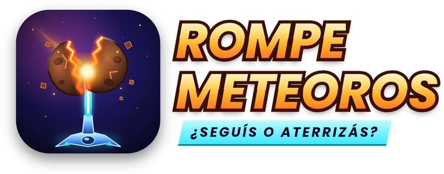

DESCARGAR PARA ANDROIDApp {{APP}} · Juego v{{GAME}} ABRIR EN IPHONEJuego v{{GAME}}INSTALAR EN IPHONE / IPAD
- Abrí esta página en Safari.
- Tocá ABRIR EN IPHONE.
- Tocá el botón Compartir (abajo, en el medio).
- Elegí "Agregar a pantalla de inicio" y tocá Agregar.
Te queda el ícono de Rompemeteoros como una app, en pantalla completa y también sin internet.
NOVEDADES
{{NOTES}}
CÓMO INSTALAR
- Tocá DESCARGAR PARA ANDROID.
- Abrí el archivo rompemeteoros.apk desde las notificaciones o Descargas.
- Si Android lo pide, permití "Instalar apps desconocidas" para tu navegador.
- Tocá INSTALAR y listo.
ACTUALIZACIONES
Las mejoras del juego llegan solas: al abrir la app te avisa "¡Actualización lista!" y se aplica al instante, sin reinstalar. También podés buscarlas en Ajustes → Buscar actualizaciones.En iPhone la app se actualiza sola: cada vez que la abrís con internet ya tenés la última versión.Publicado {{DATE}}